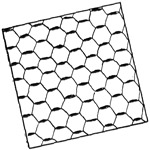
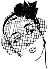
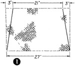

1952—How to Make Hats
by Ruby Carnahan
How to Apply Trimmings
WINGS
To tack a wing on a hat as a trimming, sew wire on wing to hat. Then tack through wing underneath a feather on the wings, tie threads on underside.
Always pin trimming on hat before sewing. Try hat on, make proper adjustments and then sew.
FLOWERS
Flowers are pinned on hat. Then try on hat, make adjustments and sew stem of flower to hat. Tack under a petal of flower using a tie tack. To make an entire hat of flowers each flower is sewn on separately usually in the center of flower. Leaves are tacked on the very edge of leaf with the same color green thread and a tie tack stitch is used.
BEADS
Beads are applied to felts by slipping the needle through a layer of the felt, but not through to other side of felt as stitches must not show. Felt is very easily beaded.
When beading a velvet hat cover side you are going to bead with velvet first then sew on beads. Then cover other side of hat with velvet.
VEILS
Usually one yard of veiling is required for the average hat. However some veils are very small and require only % of a yard. Sometimes the veiling is too wide for a particular hat. In this event cut off some of the width of the veiling, using the side that has been cut at the top of the hat, turning in the cut part and sewing or tacking in place, on hat. If a small visor veil is used, swirl veiling with a steam iron and let veil dry before sewing in hat. Then cut off all excess veiling inside headsize, after veil has been sewn in hat.
To drape a
drape a  veil on a hat, pin center of veiling to center of hat. Put hat
on Utility head block and drape and fold veiling until desired effect is attained.
veil on a hat, pin center of veiling to center of hat. Put hat
on Utility head block and drape and fold veiling until desired effect is attained.
Gather ends of veiling, (cutting off any excess) wind ends of veil with a thread and tuck ends of veiling under edge of crown or brim or under any fold, here use your own individuality. Ends of veiling may have narrow velvet ribbon sewn on and veil tied at the back of hat.
BIRD CAGE VEIL
MATERIAL REQUIRED
- 3/4 yd. 18" veiling.
Gather ends of veiling together, starting 3" from each end at top of veil and slant shirring to other end of veil (Illus. 1).
Bottom of veil will be 27" and top of veil will be 21". Gather top of veil to fit around front of crown and adjust ends of veil on hat and tack (Illus. 2).
 Crush tissue paper
up under front of veil and pass through steam, pushing paper against veil
as you steam (Illus. 3).
Crush tissue paper
up under front of veil and pass through steam, pushing paper against veil
as you steam (Illus. 3).
 For a veil with tab ends, use 1 1/4 to 1 1/2 yds. of veiling. After veil is
adjusted on hat, gather in ends of veil and sew beads, buttons, or some other
trim to veil ends, lapping veil ends at back of hat (Illus. 4).
For a veil with tab ends, use 1 1/4 to 1 1/2 yds. of veiling. After veil is
adjusted on hat, gather in ends of veil and sew beads, buttons, or some other
trim to veil ends, lapping veil ends at back of hat (Illus. 4).